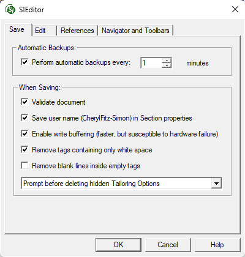

This command can be executed from the SI Editor's Tools menu.
The Save tab in the Options window allows the customization of the SI Editor's configuration settings.

Automatic Backups
- Perform automatic backups every - To prevent data loss, the SI Editor automatically creates temporary backups of your modified files every 1 minute by default, with the option to customize this interval. The temporary backup files are deleted when you save and close the original file.
 The Automatic Backups feature plays a crucial role in data recovery, acting as a safeguard during power outages or system crashes since the temporary files are not deleted. When re-opening an affected file, you can choose between the original or the temporary backup containing the recent edits captured during the last automatic backup before the failure.
The Automatic Backups feature plays a crucial role in data recovery, acting as a safeguard during power outages or system crashes since the temporary files are not deleted. When re-opening an affected file, you can choose between the original or the temporary backup containing the recent edits captured during the last automatic backup before the failure.
When Saving
- Validate document - When this option is checked, the SI Editor validates the document requirements before saving the file. This includes checking for correct tagging and adherence to the Section format.
 Section Validation can be performed at any stage of the editing process either by saving the Section or selecting the Validate button located on the Toolbar. If validation issues are detected a Validation Log is generated and the SI Editor will prompt you to view it. Selecting Yes will open the Validation Log, which assists in the swift identification and resolution of these issues, thereby ensuring report accuracy and preventing subsequent errors. Once the errors have been corrected, close the Validation Log to return to the Editing window.
Section Validation can be performed at any stage of the editing process either by saving the Section or selecting the Validate button located on the Toolbar. If validation issues are detected a Validation Log is generated and the SI Editor will prompt you to view it. Selecting Yes will open the Validation Log, which assists in the swift identification and resolution of these issues, thereby ensuring report accuracy and preventing subsequent errors. Once the errors have been corrected, close the Validation Log to return to the Editing window.
- Save user name in Section properties - When this option is checked, SpecsIntact will record the Windows user name of the last person to edit a Section. The name will be displayed in the SpecsIntact Explorer by selecting the View menu > Columns, then checking the Last Edited By option.
- Enable write buffering (faster, but susceptible to hardware failure) - Windows write buffering/caching can cause data loss during network problems. When enabled, Windows may delay writing files to the server, holding them in memory instead. If a network issue occurs during this delay, unsaved data may be lost. Disabling this option ensures that files are written directly to the server, minimizing the risk of data loss due to network interruptions.
- Remove tags containing only white space - When this option is checked, the SI Editor strips most tags that contain only white space (represented by tabs and spaces) when you save the file. This behavior excludes four tags used for editing: ADD, DEL, CHG, and UND. This option helps prevent empty Subparts, which can cause problems with automatic paragraph renumbering. Use of this option is highly recommended.
- Remove blank lines inside empty tags - When used with Remove tags containing only white space, this option allows the SI Editor to eliminate blank lines (hard returns) within empty tags. This behavior excludes four tags used for editing: ADD, DEL, CHG, and UND. Use this option with caution and only if you fully understand its effect on Section formatting, as it could inadvertently delete intentional blank lines between Section elements.
- Use the options in the Tailoring Options drop-down list to select how you want the SI Editor to handle any hidden Tailoring Options (TAI).
- Retain hidden Tailoring Options - When a Section with hidden Tailoring Options is closed, the tailoring is retained in the Section. When preparing a new Section, this feature helps you efficiently test the impact of various Tailoring Options.
- Prompt before deleting hidden Tailoring Options - When a Section with hidden Tailoring Options is closed, the SI Editor displays a warning message before deleting the Tailoring Options and saving the Section without them, allowing you to cancel the action. It is recommended to use this option to prevent permanently deleting hidden Tailoring Options. If the Job or Master is set up to use Revisions, the hidden Tailoring Options will be redlined.
- Delete hidden Tailoring Options without asking - When a Section with hidden Tailoring Options is closed, the Tailoring Options are permanently removed from the Section without a warning box or the ability to cancel the action. For the Revisions to appear when hiding Tailoring Options from within the SI Editor, you must first save and close the Section. When the Section is re-opened, the redlined Tailoring Options will be visible.
 The SI Editor's Undelete Redlined Revisions feature allows you to restore individual instances of redlined Tailoring Options.
The SI Editor's Undelete Redlined Revisions feature allows you to restore individual instances of redlined Tailoring Options.
Standard Windows Commands
 The OK button will execute and save the selections made.
The OK button will execute and save the selections made.
 The Cancel button will close the window without recording any selections or changes entered.
The Cancel button will close the window without recording any selections or changes entered.
 The Help button will open the Help Topic for this window.
The Help button will open the Help Topic for this window.